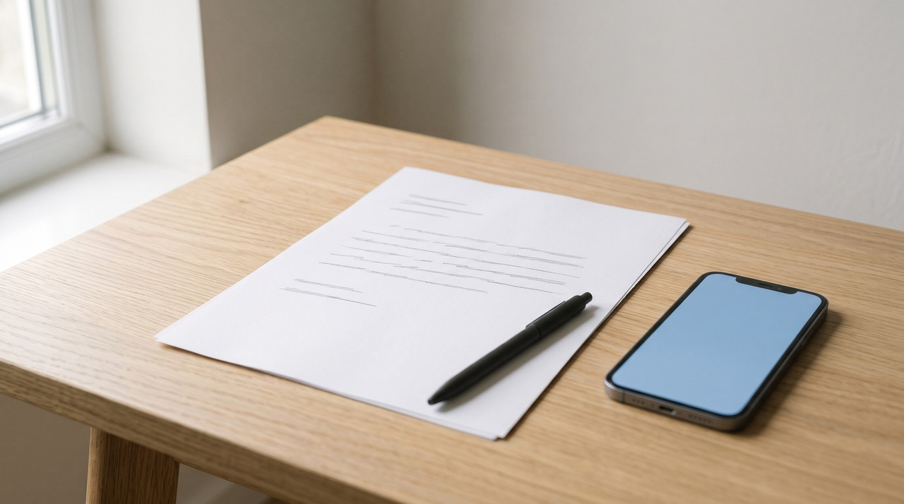
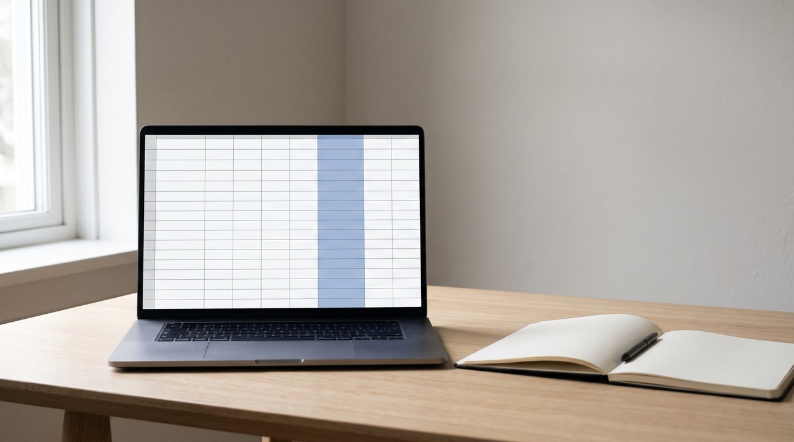

How to start clipping: the honest setup for a beginner
To start clipping, first get the right to use a video: your own footage, a creator's written permission, or a campaign whose rules you have read. After that, find the strong moments in the long video, cut each one tall with captions, add your own hook or commentary, post it, and write down how it performed. You can do all of this with free tools at the start.
People keep seeing clip accounts everywhere and want to know how to begin, especially during GTA 6 launch week since Rockstar set the release for 19 November 2026 and there are more long streams available than usual. Clipping simply means taking a long video, like a stream or a podcast, and cutting its best moments into short vertical videos for YouTube Shorts, TikTok and Reels.
Most guides open with money. I am going to open with the part they leave for the end, which is whose video you are allowed to cut. The setup itself is small, and you can do all of it in one evening. This page is the setup and the daily routine. What clipping can and cannot earn is on a separate page, what really pays from GTA 6, so I will not repeat it here.
Before you cut anything, keep in mind that nothing here is legal or financial advice, and if you clip GTA 6 gameplay, that game belongs to Take-Two and Rockstar Games. This site has no connection to either company, and Rockstar can remove footage whenever it wants. Most people who are new to clipping earn very little at first, and even when a streamer says yes, that permission covers copyright only and does not make your clips eligible for YouTube ads.
Whose video are you allowed to clip?

You have three honest ways to source your videos. You can use your own video, or you can ask a creator for written permission, such as an email, a direct message or a public clip policy on their channel, and save that proof with the date. Your third option is a clipping campaign, where a creator or a brand invites people to clip their videos under written rules.
These campaigns run on platforms, and Whop's Content Rewards is one of the well-known ones. When I checked Whop's own page about it on 19 November 2026, which was last updated on 28 October 2026, it explained the arrangement from the brand's perspective: the brand funds a campaign, chooses its own rate ("You get to decide how much you'll pay per 1,000 views"), reviews the clips submitted and handles the payouts (Whop). Because every campaign sets its own rate and rules, your clip only counts once the brand approves it.
That is why you read the rules of each campaign before you cut anything. Look for which videos you may use, what a clip must include, and what gets a clip rejected. Also check that the campaign is real and still open on the day you join. I wrote down how I check that in finding clip moments in a long GTA 6 stream.
There is one more rule that sits above all of this, because YouTube's channel monetization policies state that its reused content rule applies even when the original creator gave you permission. Getting permission makes a clip allowed to post, so adding your own hook, commentary or story is what makes the video yours.
What do you need before your first clip?
You actually need much less gear and software than paid courses make it seem. Here is the complete kit you need, along with a free option for every part.
| What you need | A free way to get it | What to know |
|---|---|---|
| The right to use the video | Your own video, a written yes, or a campaign's rules | Keep a screenshot with the date |
| The long video as a file | Your own recording, or the file the creator shares | A file is safer than a link for a 3 hour stream |
| An editor that cuts tall video | A phone editor such as CapCut | Which features stay free changes often |
| Accounts to post on | YouTube, TikTok, Instagram | Each campaign has its own account rules, so read them |
| A log | Any spreadsheet | One row for every clip you post |
You do not have to buy a new computer, pay for a course or have a big following to get started. All you really need is permission, one video editor and the habit of writing down your results.
What does the daily routine look like?
What surprises most people about clipping is that cutting the video is actually the small job, while finding the few good minutes inside a long recording takes up most of the hours. Because I build a desktop app called VideoDoc that includes a Video to shorts tab specifically for that step, I will use it here to walk through the routine, though the same steps apply in any editor.
- Pick one source. One stream or one episode that you are allowed to clip. Do not start with five.
- Find the moments. In Video to shorts, add the file. The app listens to it on your own computer and lists the best parts, each with 1 to 5 dots and a plain reason, such as it starts with a question or it is a complete thought.
- Watch each one. The dots are a starting list. The app does not know the game or the joke, so you decide what stays.
- Cut it tall. Export at 1080x1920. The frame can follow the face, or put the facecam on top and the screen below.
- Check the captions. Word by word captions are on by default. Read them once, because names and slang are where a speech engine makes mistakes.
- Add something of your own. A first line that says why this moment matters, your voice over it, or your take in the caption. This is the step most new clippers skip.
- Post and log it. Write the clip into your sheet the same day.
If you use Lite, which is the version of the app without a Pro key, it accepts videos up to 20 minutes long and places a small "Made with VideoDoc" mark on every export. Pro removes both the length limit and the mark. Since a launch stream runs much longer than 20 minutes, you will need to cut out the section you want first if you are working in Lite.
What is the free way, and where does it stop?
You can follow this entire routine using only free tools. Watch the long video yourself, note the timestamps of the good moments, cut them in a phone editor, and switch on its automatic captions. If you only want one or two clips from a video you already know well, that method is enough and I would not spend money on anything for it.
The main limit of doing everything manually is finding the clips, because nobody marks the strong moments for you and a 3 hour stream means 3 hours of watching or a lot of skipping and guessing. If you plan to clip the same creator regularly, that search step is worth handing over to a tool. Your phone is the other bottleneck, since moving large video files onto it is slow.
How do you know what is working?

Keep your tracking log simple so you actually stick with it. For every clip, write down the date, the source video, the opening line you used, where you posted it and the views it got after two days, plus whether the brand approved it if it was for a campaign. Once you have twenty rows filled in, you will clearly see which openings and moments work best for you, and that data helps far more than general advice.
I will not tell you a specific number of clips to post or promise what they might earn, because every platform and campaign is different and I do not have an honest figure to give you. What I can tell you is that a steady pace you can maintain for a month beats a heavy burst that you quit after four days.
Keep in mind that VideoDoc does not get permission for you, does not find campaigns and does not publish your posts. Its suggestions are simply a list for you to review rather than a final judgment, and the Video to shorts feature runs on Windows and Apple Silicon Macs rather than on a phone. Also remember that adding captions, a crop or a border never turns someone else's video into your own original work.
Try the routine on a video you are allowed to clip.
Lite is free for videos up to 20 minutes, and the details are on the Video to shorts page. Pro is a one time payment. GTA 6 week: the Pro button below adds code GTA6, which takes 50% off for the first 100 buyers.
Quick questions
Can I clip any video I find on YouTube?
No, you should only clip your own videos, or use someone else's footage if you have written permission or follow a campaign's rules. Even then, permission only covers copyright, so YouTube's reused content rule still applies.
Do I need followers to start clipping?
You do not need followers just to learn the routine. However, each campaign sets its own requirements for accounts, so read those rules carefully before you join one.
Can I start clipping for free?
Yes, a basic phone editor and a spreadsheet are all you need to start. VideoDoc Lite is also free to use for videos up to 20 minutes long, and it puts a small mark on each export.
Tonight, focus on getting one written yes or choosing one of your own videos, and cut just a single clip from it before you go looking for a campaign.

I am a telecom engineer and business analyst from Pakistan, and I build small honest desktop tools under Designesh. I made VideoDoc because I wanted my AI to read the lectures I study from. Everything here is tested on my own machine first.